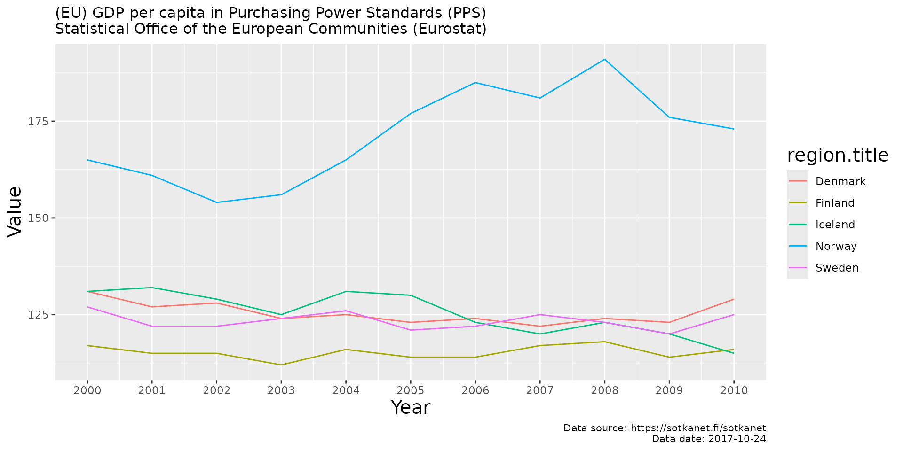
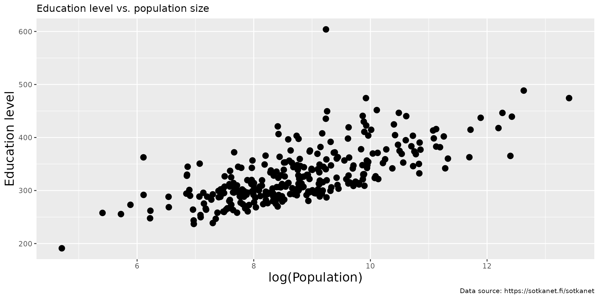

This sotkanet R package provides access to data from the Sotkanet portal. Your contributions and bug reports and other feedback are welcome.
Introduction
The Sotkanet portal provides over 2000 demographic indicators across Finland and Europe. It is maintained by the National Institute for Health and Welfare (THL). For more information, see Information about Sotkanet and API description.
The sotkanet R package enables access to the Sotkanet
API using R facilitating the use of the data from the API. This package
is part of rOpenGov.
Installation
To install latest release version from CRAN, use:
install.packages("sotkanet")To install development version from GitHub, use:
library(remotes)
remotes::install_github("ropengov/sotkanet")Test the installation by loading the package:
Usage
Listing availabe indicators
Load sotkanet and other packages used in the vignette.
List available Sotkanet indicators using
sotkanet_indicators():
# Using a preset list of indicators to avoid a large download
indicators <- sotkanet_indicators(id = c(4, 5, 6, 127, 10012, 10027),
type = "table", lang = "en")
kable(head(indicators))| indicator | indicator.title | indicator.organization | indicator.organization.title |
|---|---|---|---|
| 4 | Hospital care for mental disorders, recipients aged 0-17 per 1000 persons of the same age | 2 | Finnish institute for Health and Welfare (THL) |
| 5 | Social assistance recipients aged 25-64, as % of total population of same age | 2 | Finnish institute for Health and Welfare (THL) |
| 6 | Specialised somatic inpatient health care, care days for those aged 75 and over per 1000 persons of same age | 2 | Finnish institute for Health and Welfare (THL) |
| 127 | Population at year end | 3 | Statistics Finland |
| 10012 | (EU) GDP per capita in Purchasing Power Standards (PPS) | 58 | Statistical Office of the European Communities (Eurostat) |
| 10027 | (EU) Standardised death rate due to suicides per 100 000 persons | 58 | Statistical Office of the European Communities (Eurostat) |
List geographical regions with available indicators using
sotkanet_regions():
# List of the first few regions
regions <- sotkanet_regions(type = "table", lang = "en")
kable(head(regions))| region | region.title | region.code | region.category | region.uri |
|---|---|---|---|---|
| 833 | Area for Southern Finland AVI | 1 | ALUEHALLINTOVIRASTO | http://www.yso.fi/onto/kunnat/ahv1 |
| 834 | Area for Southwestern Finland AVI | 2 | ALUEHALLINTOVIRASTO | http://www.yso.fi/onto/kunnat/ahv2 |
| 835 | Area for Eastern Finland AVI | 3 | ALUEHALLINTOVIRASTO | http://www.yso.fi/onto/kunnat/ahv3 |
| 836 | Area for Western and Inland Finland AVI | 4 | ALUEHALLINTOVIRASTO | http://www.yso.fi/onto/kunnat/ahv4 |
| 837 | Area for Northern Finland AVI | 5 | ALUEHALLINTOVIRASTO | http://www.yso.fi/onto/kunnat/ahv5 |
| 838 | Area for Lapland AVI | 6 | ALUEHALLINTOVIRASTO | http://www.yso.fi/onto/kunnat/ahv6 |
Querying Sotkanet data
To download the data, we need to know the indicator for it. You can
look for the right indicator using aforementioned
sotkanet_indicators() or by browsing the Sotkanet website. For
example, the indicator no. 10012 responds to the (EU) GPD per capita in
Purchasing Power Standards (PPS) dataset. The data can be downloaded
with get_sotkanet() function. If we want, for example, the
GPD data from Finland for 2000-2010, the function call is:
# Get the indicator data
dat <- get_sotkanet(indicators = 10012, years = 2000:2010,
genders = c("total"), lang = "en", regions = "Finland")
# The first few lines of the data
kable(head(dat)) %>%
kable_styling() %>%
scroll_box(width = "100%")| indicator | region | year | gender | primary.value | absolute.value | indicator.title | region.title | region.code | region.category | indicator.organization.title |
|---|---|---|---|---|---|---|---|---|---|---|
| 10012 | 1045 | 2005 | total | 114 | NA | (EU) GDP per capita in Purchasing Power Standards (PPS) | Finland | 246 | POHJOISMAAT | Statistical Office of the European Communities (Eurostat) |
| 10012 | 1022 | 2010 | total | 116 | NA | (EU) GDP per capita in Purchasing Power Standards (PPS) | Finland | 246 | EUROOPPA | Statistical Office of the European Communities (Eurostat) |
| 10012 | 1022 | 2002 | total | 115 | NA | (EU) GDP per capita in Purchasing Power Standards (PPS) | Finland | 246 | EUROOPPA | Statistical Office of the European Communities (Eurostat) |
| 10012 | 1045 | 2006 | total | 114 | NA | (EU) GDP per capita in Purchasing Power Standards (PPS) | Finland | 246 | POHJOISMAAT | Statistical Office of the European Communities (Eurostat) |
| 10012 | 1022 | 2001 | total | 115 | NA | (EU) GDP per capita in Purchasing Power Standards (PPS) | Finland | 246 | EUROOPPA | Statistical Office of the European Communities (Eurostat) |
| 10012 | 1045 | 2003 | total | 112 | NA | (EU) GDP per capita in Purchasing Power Standards (PPS) | Finland | 246 | POHJOISMAAT | Statistical Office of the European Communities (Eurostat) |
The data can also be downloaded by using interactive function
sotkanet_interactive(). It gives user interactive
alternative for downloading the dataset. This function can also print
dataset citation, code for the get_sotkanet() call and
fixity checksum.
Dataset citation can be printed for any indicator using the function
sotkanet_cite(). The citation for the GPD data is:
sotkanet_cite(10012, lang = "en")
#> @Misc{,
#> title = {(EU) GDP per capita in Purchasing Power Standards (PPS)},
#> url = {https://sotkanet.fi/sotkanet/en/metadata/indicators/10012},
#> organization = {Statistical Office of the European Communities (Eurostat)},
#> year = {2017},
#> urldate = {2024-07-15},
#> type = {Dataset},
#> note = {Accessed 2024-07-15, dataset last updated 2017-10-24},
#> }Examples
Let’s now demonstrate the use of the package with two examples. For the first example we will use the GPD data from Nordic countries (Pohjoismaat) for 2000-2010 and draw a time series of the data comparing the countries.
# Get indicator data
dat <- get_sotkanet(indicators = 10012, years = 2000:2010,
genders = "total", lang = "en", region.category = "POHJOISMAAT")
indicator_name <- as.character(unique(dat$indicator.title))
indicator_source <- as.character(unique(dat$indicator.organization.title))
# Retrive metadata
dat_meta <- sotkanet_indicator_metadata(id = 10012)
# Visualize
library(ggplot2)
p <- ggplot(dat, aes(x = year, y = primary.value,
group = region.title, color = region.title)) +
geom_line() + ggtitle(paste0(indicator_name, " \n", indicator_source)) +
labs(x = "Year", y = "Value",caption = paste0(
"Data source: https://sotkanet.fi/sotkanet", "\n", "Data date: ", dat_meta$`data-updated`)) +
scale_x_continuous(breaks = seq(2000,2010, by = 1)) +
theme(title = element_text(size = 10)) +
theme(axis.title.x = element_text(size = 15)) +
theme(axis.title.y = element_text(size = 15)) +
theme(legend.title = element_text(size = 15))
print(p)
For the second example we will plot the population of Finnish municipalities against a measure of educational level.
# Get the data for the two indicators
dat <- get_sotkanet(indicators = c(127, 180),
years = 2022, lang = "en",
genders = c("total"), region.category = c("KUNTA"))
# Pick the fields of interest and remove duplicates
datf <- dat[,c("region.title", "indicator.title", "primary.value")]
datf <- datf[!duplicated(datf),]
dw <- reshape(datf, idvar = "region.title",
timevar = "indicator.title", direction = "wide")
names(dw) <- c("Municipality", "Population", "Education_level")
# Vizualise
p <- ggplot(dw, aes(x = log(Population), y = Education_level)) + geom_point(size = 3) +
ggtitle("Education level vs. population size") +
theme(title = element_text(size = 10)) +
labs(y = "Education level", caption = "Data source: https://sotkanet.fi/sotkanet") +
theme(axis.title.x = element_text(size = 15)) +
theme(axis.title.y = element_text(size = 15)) +
theme(legend.title = element_text(size = 15))
plot(p)
Licensing and Citations
Sotkanet data
Cite Sotkanet and link to https://sotkanet.fi/sotkanet/fi/index. Also mention indicator provider.
Central points:
- SOTKAnet REST API is meant for non-regular data queries. Avoid regular and repeated downloads.
- SOTKAnet API can be used as the basis for other systems
- Metadata for regions and indicators are under CC-BY 4.0
- THL indicators are under CC-BY 4.0
- Indicators provided by third parties can be used only by separate agreement!
Sotkanet R package
This work can be freely used, modified and distributed under the Two-clause BSD license.
citation("sotkanet")
#> Kindly cite the sotkanet R package as follows:
#>
#> Leo Lahti, Einari Happonen, Juuso Parkkinen, Joona Lehtomaki, Vesa
#> Saaristo, Aleksi Lahtinen and Pyry Kantanen (rOpenGov 2024).
#> sotkanet: Sotkanet Open Data Access and Analysis. R package version
#> 0.10.1 https://github.com/rOpenGov/sotkanet
#>
#> A BibTeX entry for LaTeX users is
#>
#> @Misc{,
#> title = {sotkanet: Sotkanet Open Data Access and Analysis},
#> author = {Leo Lahti and Einari Happonen and Joona Lehtomäki and Juuso Parkkinen and Joona Lehtomaki and Vesa Saaristo and Pyry Kantanen and Aleksi Lahtinen},
#> url = {https://github.com/rOpenGov/sotkanet},
#> year = {2024},
#> note = {R package version 0.10.1},
#> }
#>
#> Many thanks for all contributors!Suggestions and bug reports
You can check the package GitHub page for known issues. You can can also use it to report new bugs and to make suggestions for improving the package.
Session info
This vignette was created with
sessionInfo()
#> R version 4.4.1 (2024-06-14)
#> Platform: x86_64-pc-linux-gnu
#> Running under: Ubuntu 22.04.4 LTS
#>
#> Matrix products: default
#> BLAS: /usr/lib/x86_64-linux-gnu/openblas-pthread/libblas.so.3
#> LAPACK: /usr/lib/x86_64-linux-gnu/openblas-pthread/libopenblasp-r0.3.20.so; LAPACK version 3.10.0
#>
#> locale:
#> [1] LC_CTYPE=C.UTF-8 LC_NUMERIC=C LC_TIME=C.UTF-8
#> [4] LC_COLLATE=C.UTF-8 LC_MONETARY=C.UTF-8 LC_MESSAGES=C.UTF-8
#> [7] LC_PAPER=C.UTF-8 LC_NAME=C LC_ADDRESS=C
#> [10] LC_TELEPHONE=C LC_MEASUREMENT=C.UTF-8 LC_IDENTIFICATION=C
#>
#> time zone: UTC
#> tzcode source: system (glibc)
#>
#> attached base packages:
#> [1] stats graphics grDevices utils datasets methods base
#>
#> other attached packages:
#> [1] ggplot2_3.5.1 kableExtra_1.4.0 sotkanet_0.10.1
#>
#> loaded via a namespace (and not attached):
#> [1] rappdirs_0.3.3 utf8_1.2.4 sass_0.4.9 generics_0.1.3
#> [5] xml2_1.3.6 stringi_1.8.4 hms_1.1.3 digest_0.6.36
#> [9] magrittr_2.0.3 grid_4.4.1 evaluate_0.24.0 timechange_0.3.0
#> [13] fastmap_1.2.0 plyr_1.8.9 jsonlite_1.8.8 backports_1.5.0
#> [17] httr_1.4.7 fansi_1.0.6 viridisLite_0.4.2 scales_1.3.0
#> [21] httr2_1.0.1 bibtex_0.5.1 textshaping_0.4.0 jquerylib_0.1.4
#> [25] cli_3.6.3 rlang_1.1.4 munsell_0.5.1 withr_3.0.0
#> [29] cachem_1.1.0 yaml_2.3.9 tools_4.4.1 tzdb_0.4.0
#> [33] dplyr_1.1.4 colorspace_2.1-0 frictionless_1.1.0 curl_5.2.1
#> [37] vctrs_0.6.5 R6_2.5.1 lifecycle_1.0.4 lubridate_1.9.3
#> [41] RefManageR_1.4.0 stringr_1.5.1 fs_1.6.4 htmlwidgets_1.6.4
#> [45] ragg_1.3.2 pkgconfig_2.0.3 desc_1.4.3 gtable_0.3.5
#> [49] pkgdown_2.1.0 bslib_0.7.0 pillar_1.9.0 glue_1.7.0
#> [53] Rcpp_1.0.12 systemfonts_1.1.0 highr_0.11 tidyselect_1.2.1
#> [57] xfun_0.45 tibble_3.2.1 rstudioapi_0.16.0 knitr_1.48
#> [61] farver_2.1.2 htmltools_0.5.8.1 labeling_0.4.3 rmarkdown_2.27
#> [65] svglite_2.1.3 readr_2.1.5 compiler_4.4.1